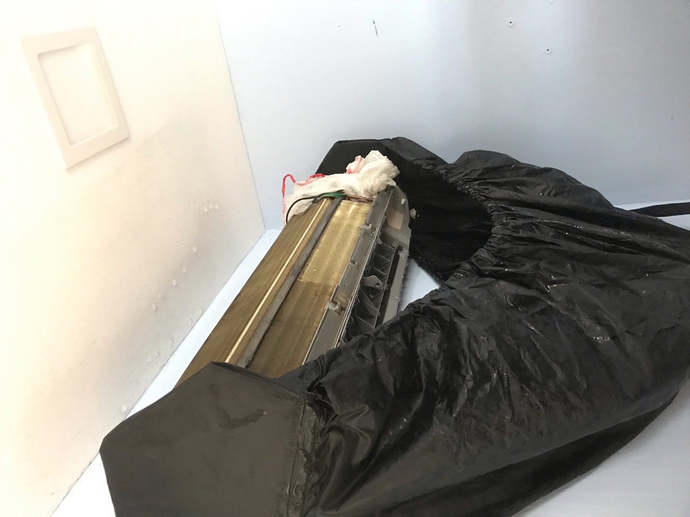
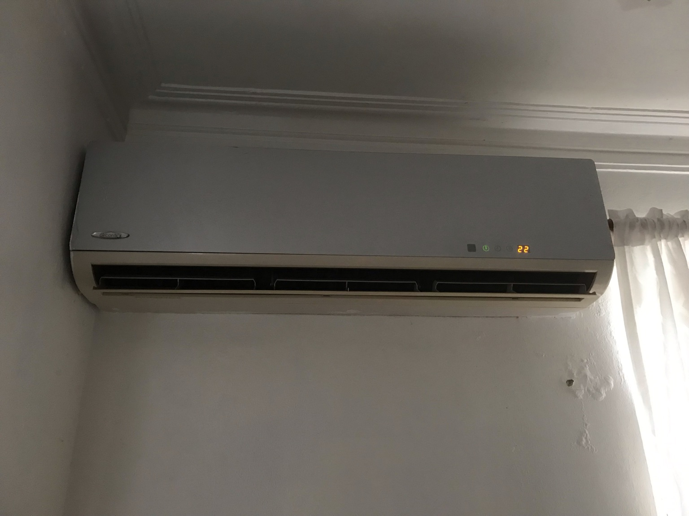
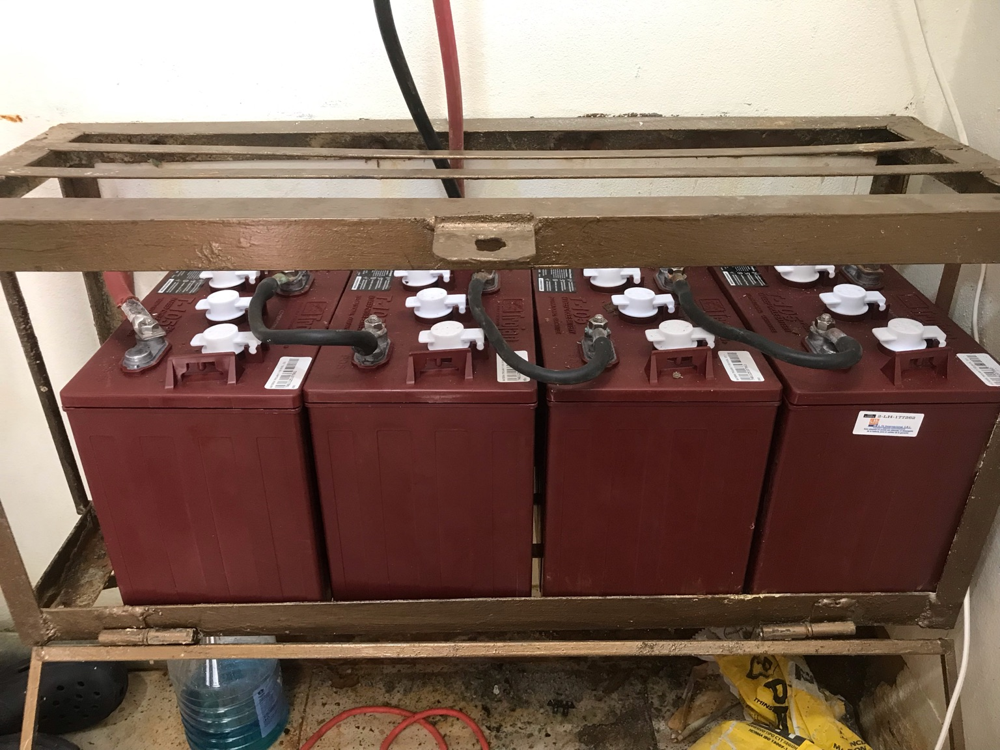
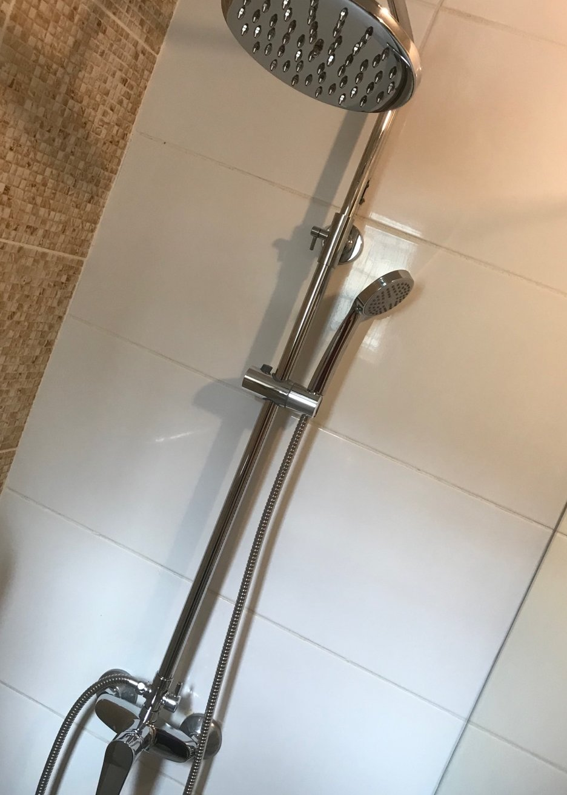
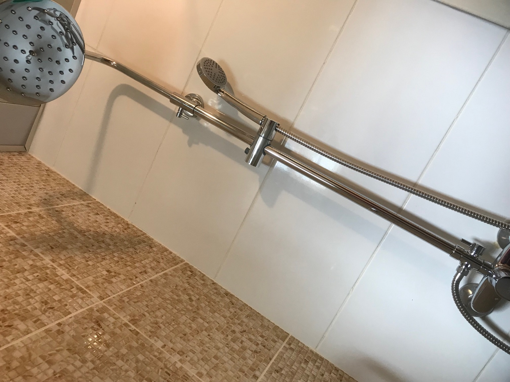
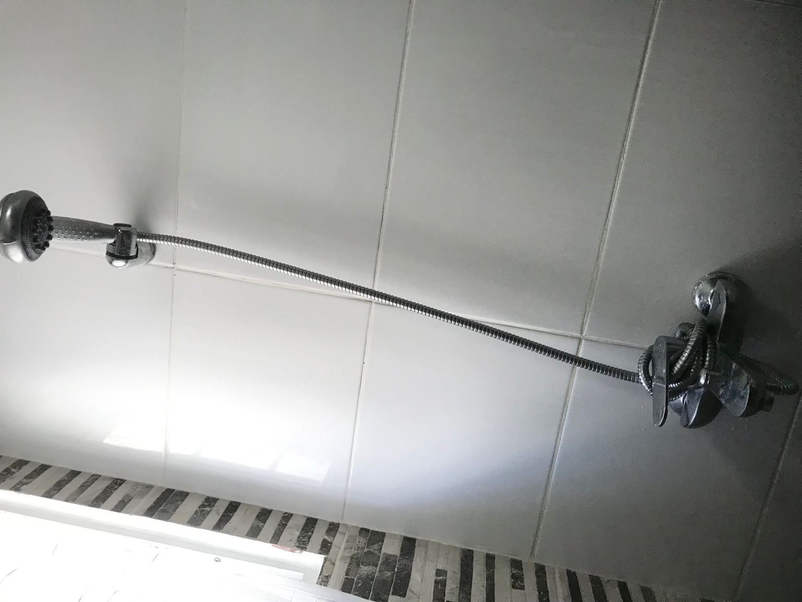
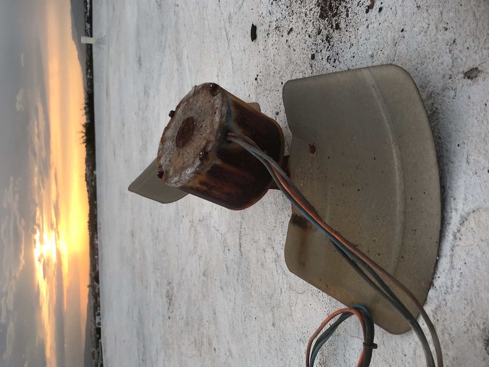
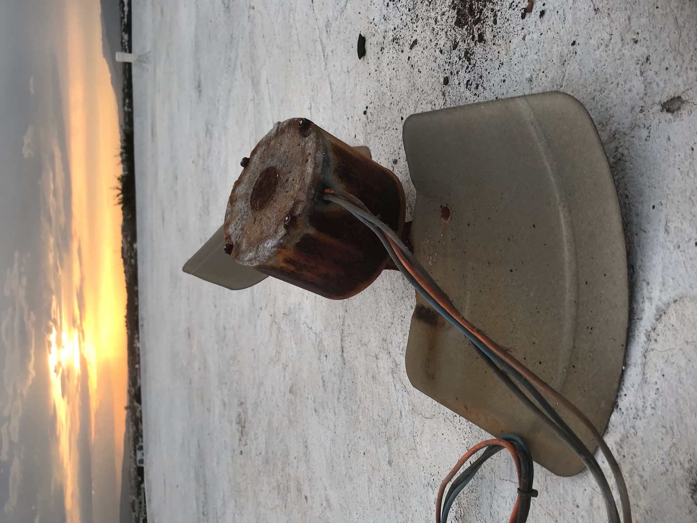

PineApple MultiService Publicado el 21 agosto 2025 • PineApple Blog Oficial de PineApple MultiService Galería de Trabajos  Mantenimiento de Aire  Instalacion de A/C y reparacion terjeta inverter  Instalacion de Banco de Baterias para Inversor 3.6KW
Publicaciones Publicado el 30 Agosto 2025 Nuevo sistema de duchas  Cambio de Ducha de baño  Otra imagen  otra foto Publicaciones Publicado el 05 julio 2025 Trabajos de PineApple MultiService  Cambio Motor FAN condensador 36,000 BTU Cambio de sistema de tuberias suministro y desague fregadero Cambio a tanque presurizado 66 G L cisterna
Publicaciones Publicado el 05 julio 2025 Trabajos de PineApple MultiService  Cambio Motor FAN condensador 36,000 BTU Cambio de sistema de tuberias suministro y desague fregadero Cambio a tanque presurizado 66 G L cisterna